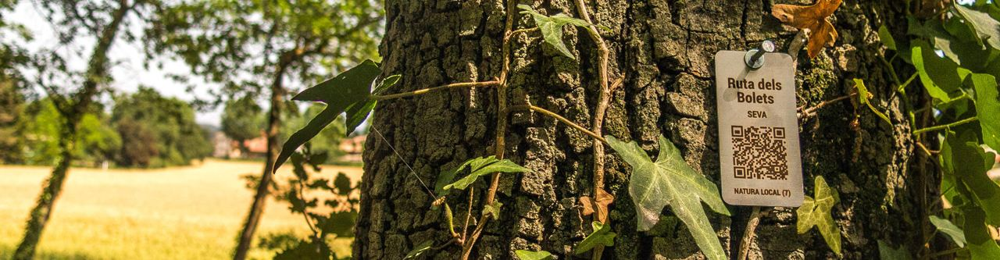

Ruta · Seva
La “Ruta dels bolets de Seva” és una proposta per aproximar-vos al món dels bolets, en un entorn natural privilegiat, a on una bonica roureda agafa protagonisme, però també a on podreu gaudir, tot…